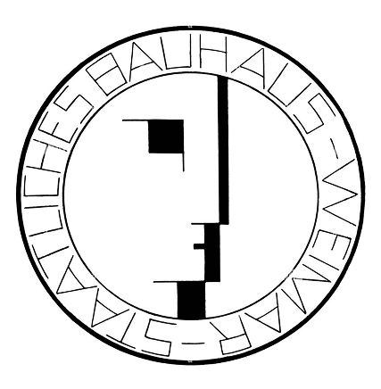
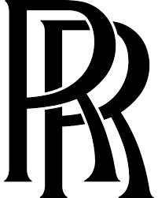
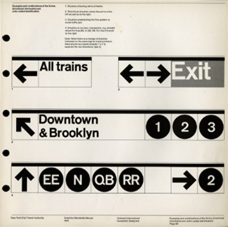
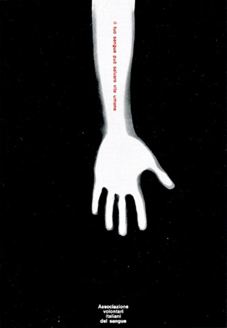
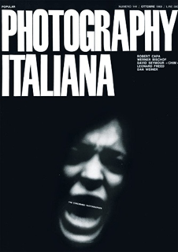

Il colore dell'autorità e dell'essenzialità visiva
Il nero è un colore acromatico, intenso e dominante, capace di trasmettere forza, controllo e presenza visiva.
Nella comunicazione visiva viene percepito come elegante e autorevole, ma anche austero, enigmatico e introspettivo.
Il nero è storicamente associato a concetti opposti: eleganza e lutto, raffinatezza e paura, formalità e ribellione.
Può evocare mistero, individualità e potere, ma anche silenzio, fine e proibizione. Nel linguaggio contemporaneo è spesso legato a neutralità e controllo visivo.
Esso viene utilizzato per creare composizioni essenziali e ad alto contrasto, valorizzando tipografia, immagini e leggibilità. È molto impiegato in identità visive legate a lusso, tecnologia e minimalismo, dove comunica eleganza, solidità e rigore progettuale.
Tuttavia, se non viene calibrato correttamente, tende a generare una sensazione di compressione spaziale, rendendo la composizione chiusa.
0, 0, 0
0%, 0%, 0%, 100%
0, 0, 0
0°, 0%, 0%
Marchio Cartier, 1910
Sigillo Bauhaus, 1922

Marchio Rolls Royce, 1906

Identità visiva metro di New York, 1966-1970

Manifesto per l'AVIS di Monza, 1971

Copertina per N. 144 della rivista "Photography Italiana", 1970
